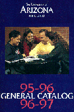

The University of Arizona
1995-97 General Catalog
|
Departments and Course Descriptions
|
 |
Email catalog comments and suggestions to catalog@arizona.edu.
Page last updated:
May 16, 2008
Arizona Board of Regents © All contents copyright.
General Catalog http://catalog.arizona.edu/
The University of Arizona, Office of the Registrar
UA Official Record: Volume LXXXVIII No. 2 April 1995